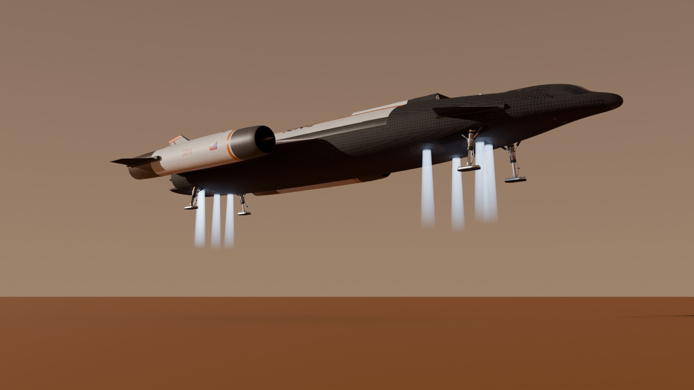
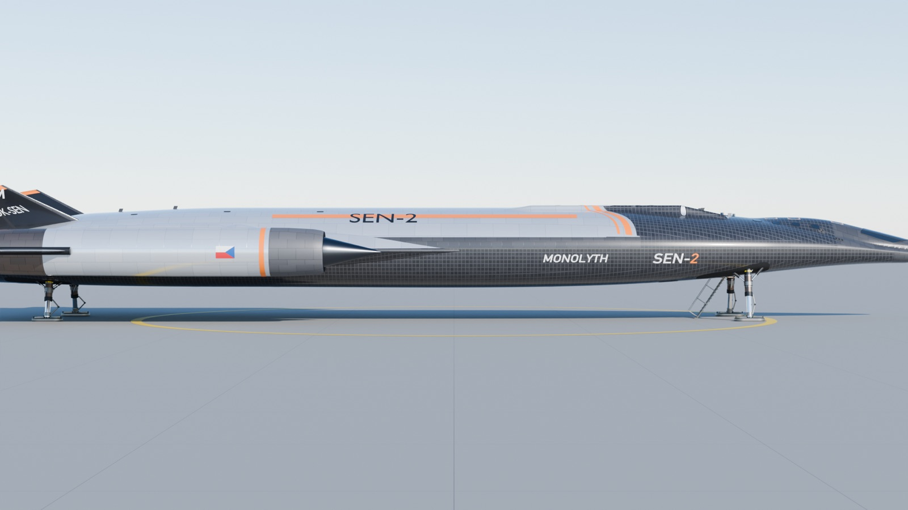
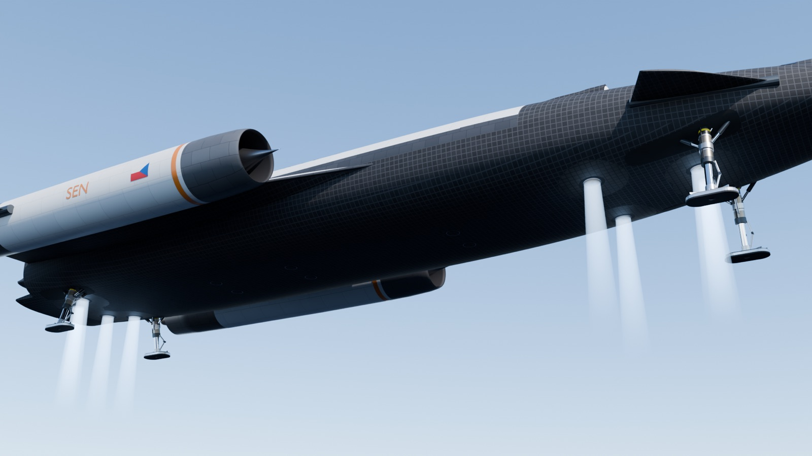
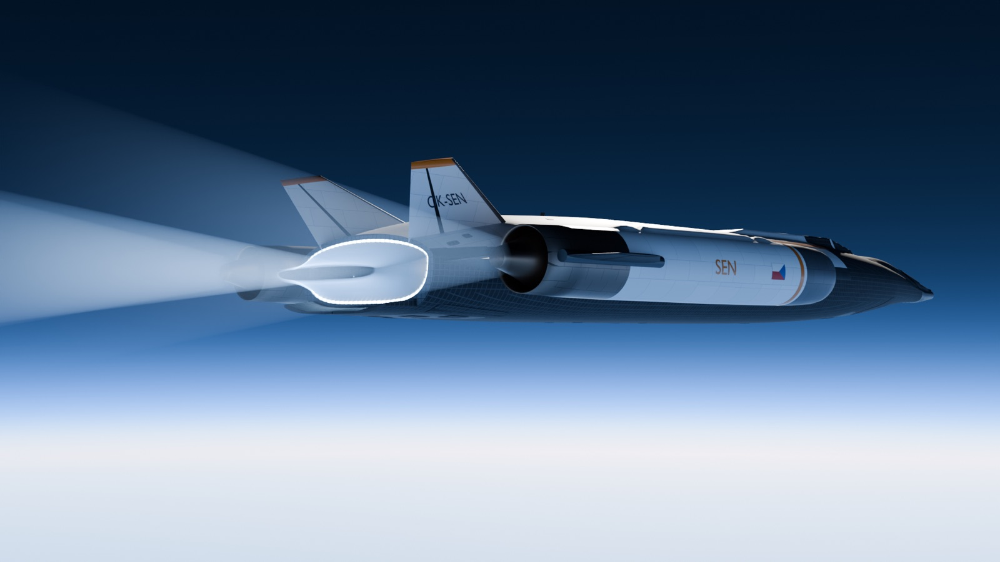

<meta charset="utf-8">
<meta name="viewport" content="width=device-width, initial-scale=1, viewport-fit=cover">
<title>Monolyth Sen</title>
<meta name="claude:viewport-fit-sides" content="cover">
<meta name="description" content="Monolyth: Sen, a spaceship that takes off and lands vertically on rockets under its hull. Concept study, 2026.">
<link rel="preconnect" href="https://fonts.googleapis.com">
<link rel="preconnect" href="https://fonts.gstatic.com" crossorigin>
<link rel="stylesheet" href="https://fonts.googleapis.com/css2?family=Barlow:wght@300;400;500;600;700&family=Michroma&display=swap">
<style>
/* Layout: a launch film on one long black page. Full-bleed footage and renders with the words pinned bottom-left,
   quiet black bands between them for the numbers. Monochrome on purpose: the only colour comes from the ship's own fire. */
:root {
  --bg: #000000;
  --band: #08090b;
  --fg: #ffffff;
  --text: #d3d8df;
  --muted: #868d97;
  --line: rgba(255, 255, 255, 0.16);
  --line-strong: rgba(255, 255, 255, 0.85);
  --scrim: rgba(0, 0, 0, 0.88);
  --display: 'Michroma', 'Eurostile', 'Microgramma', Verdana, sans-serif;
  --body: 'Barlow', 'Helvetica Neue', Arial, sans-serif;
  color-scheme: dark;
}
html { scroll-behavior: smooth; }
@media (prefers-reduced-motion: reduce) { html { scroll-behavior: auto; } }
body { background: var(--bg); color: var(--text); font-family: var(--body); font-size: 18px; line-height: 1.6; -webkit-font-smoothing: antialiased; }
body::before { content: ""; position: fixed; inset: 0 0 auto; height: env(safe-area-inset-top, 0px); z-index: 30; background: var(--bg); }
* { box-sizing: border-box; }
h1, h2, h3, p, ol, ul, dl, dd, figure { margin: 0; }
ol, ul { padding: 0; list-style: none; }
a { color: inherit; }
img, video { max-width: 100%; display: block; }
:focus-visible { outline: 2px solid var(--fg); outline-offset: 4px; }

/* language: Czech is the default; the English twin of every text sits beside it */
:root:not([data-lang="en"]) [lang="en"] { display: none !important; }
:root[data-lang="en"] [lang="cs"] { display: none !important; }

.wrap { width: 100%; max-width: 1360px; margin-inline: auto; padding-left: max(16px, env(safe-area-inset-left, 0px)); padding-right: max(16px, env(safe-area-inset-right, 0px)); }
@media (min-width: 760px) { .wrap { padding-left: max(56px, env(safe-area-inset-left, 0px)); padding-right: max(56px, env(safe-area-inset-right, 0px)); } }

/* type */
.eyebrow { font: 600 13px/1.4 var(--body); letter-spacing: 0.32em; text-transform: uppercase; color: var(--muted); }
h1 { font: 400 clamp(72px, 11.5vw, 172px)/0.95 var(--display); letter-spacing: 0.1em; color: var(--fg); margin-left: -0.04em; }
h2 { font: 400 clamp(28px, 4.4vw, 58px)/1.14 var(--display); letter-spacing: 0.03em; text-transform: uppercase; color: var(--fg); text-wrap: balance; }
h3 { font: 600 15px/1.35 var(--body); letter-spacing: 0.24em; text-transform: uppercase; color: var(--fg); }
.lede { font-size: clamp(18px, 1.6vw, 21px); line-height: 1.6; color: var(--text); max-width: 34em; }
.small { font-size: 14px; color: var(--muted); line-height: 1.5; }
.num { font-family: var(--display); font-variant-numeric: tabular-nums; color: var(--fg); }

/* buttons: hollow, fill on hover */
.btn { display: inline-flex; align-items: center; justify-content: center; gap: 12px; min-height: 52px; padding: 0 30px; border: 2px solid var(--line-strong); color: var(--fg); background: transparent; font: 600 13px/1 var(--body); letter-spacing: 0.26em; text-transform: uppercase; text-decoration: none; cursor: pointer; transition: background-color 0.25s, color 0.25s; }
.btn:hover, .btn:focus-visible { background: var(--fg); color: var(--bg); }
.btn svg { width: 12px; height: 12px; fill: currentColor; }

/* header */
.top { position: fixed; inset: 0 0 auto; z-index: 20; padding-top: env(safe-area-inset-top, 0px); transition: background-color 0.3s; }
.top.solid { background: var(--bg); border-bottom: 1px solid var(--line); }
.top-in { display: flex; align-items: center; gap: 32px; min-height: 76px; }
.brand { display: inline-flex; align-items: center; gap: 14px; text-decoration: none; color: var(--fg); }
.brand svg { width: 34px; height: 34px; flex: none; }
.brand span { font: 400 17px/1 var(--display); letter-spacing: 0.34em; }
.nav { display: flex; gap: 30px; margin-left: auto; }
.nav a, .menu a { font: 600 13px/1 var(--body); letter-spacing: 0.24em; text-transform: uppercase; text-decoration: none; color: var(--fg); padding-block: 8px; border-bottom: 1px solid transparent; }
.nav a:hover { border-bottom-color: var(--fg); }
.lang { display: flex; align-items: center; gap: 4px; font: 600 13px/1 var(--body); letter-spacing: 0.2em; color: var(--muted); }
.lang button, .units button { background: none; border: 0; color: var(--muted); font: inherit; letter-spacing: inherit; padding: 8px 6px; cursor: pointer; }
.lang button[aria-pressed="true"], .units button[aria-pressed="true"] { color: var(--fg); }
.menu-btn { display: none; align-items: center; background: none; border: 0; color: var(--fg); padding: 8px 0 8px 4px; cursor: pointer; }
.menu { border-top: 1px solid var(--line); background: var(--bg); }
.menu .wrap { display: flex; flex-direction: column; gap: 4px; padding-block: 16px 28px; }
.menu a { padding-block: 14px; border-bottom: 1px solid var(--line); }
@media (max-width: 1020px) { .nav { display: none; } .menu-btn { display: inline-flex; } .lang { margin-left: auto; } }
@media (max-width: 480px) { .top-in { gap: 12px; min-height: 64px; } .brand { gap: 10px; } .brand svg { width: 28px; height: 28px; } .brand span { font-size: 13px; letter-spacing: 0.24em; } }
@media (min-width: 1021px) { .menu { display: none; } }

/* full-bleed scenes */
.scene { position: relative; display: flex; align-items: flex-end; min-height: max(620px, 100vh); min-height: max(620px, 100svh); overflow: hidden; background: var(--bg); }
.scene .media { position: absolute; inset: 0; width: 100%; height: 100%; object-fit: cover; }
.scene .shade { position: absolute; inset: 0; background: linear-gradient(0deg, var(--scrim) 0%, rgba(0, 0, 0, 0.42) 42%, rgba(0, 0, 0, 0) 72%), linear-gradient(90deg, rgba(0, 0, 0, 0.55) 0%, rgba(0, 0, 0, 0) 58%); }
.scene .wrap { position: relative; z-index: 1; padding-block: 140px clamp(64px, 11vh, 128px); }
.copy { display: flex; flex-direction: column; gap: 22px; max-width: 760px; min-width: 0; }
.ctas { display: flex; flex-wrap: wrap; gap: 14px; margin-top: 10px; }
.status { display: inline-flex; align-items: center; gap: 12px; font: 600 12px/1.4 var(--body); letter-spacing: 0.3em; text-transform: uppercase; color: var(--fg); border: 1px solid var(--line-strong); padding: 9px 14px; align-self: flex-start; }
.status i { width: 7px; height: 7px; border-radius: 50%; background: var(--fg); animation: blink 2.4s ease-in-out infinite; }
@keyframes blink { 50% { opacity: 0.25; } }
.tagline { font: 400 clamp(16px, 1.75vw, 24px)/1.45 var(--display); letter-spacing: 0.06em; max-width: 30em; text-transform: uppercase; color: var(--fg); }
.scroll-cue { position: absolute; right: max(16px, env(safe-area-inset-right, 0px)); bottom: 28px; z-index: 1; font: 600 11px/1 var(--body); letter-spacing: 0.3em; color: var(--muted); writing-mode: vertical-rl; text-transform: uppercase; }
@media (max-width: 760px) { .scroll-cue { display: none; } }

/* black bands */
.band { background: var(--bg); padding-block: clamp(80px, 12vw, 150px); }
.band.alt { background: var(--band); }
.head { display: flex; flex-direction: column; gap: 18px; max-width: 900px; margin-bottom: clamp(44px, 6vw, 72px); }

/* numbers band */
.stats { display: grid; grid-template-columns: repeat(2, minmax(0, 1fr)); gap: 44px 24px; }
@media (min-width: 640px) { .stats { grid-template-columns: repeat(3, minmax(0, 1fr)); } }
@media (min-width: 1180px) { .stats { grid-template-columns: repeat(6, minmax(0, 1fr)); } }
.stat { display: flex; flex-direction: column; gap: 10px; border-top: 1px solid var(--line); padding-top: 22px; min-width: 0; }
.stat .num { font-size: clamp(34px, 4vw, 54px); line-height: 1; white-space: nowrap; }
.stat .num small, .fig .num small { font: 600 0.42em/1 var(--body); letter-spacing: 0.06em; color: var(--muted); margin-left: 0.3em; }
.stat p:last-child { font: 600 12px/1.45 var(--body); letter-spacing: 0.22em; text-transform: uppercase; color: var(--muted); }

/* vehicle overview */
.units { display: inline-flex; align-items: center; gap: 2px; font: 600 13px/1 var(--body); letter-spacing: 0.22em; text-transform: uppercase; border: 1px solid var(--line); padding: 2px 8px; align-self: flex-start; }
.veh { display: grid; gap: 48px; align-items: center; }
@media (min-width: 1020px) { .veh { grid-template-columns: minmax(0, 5fr) minmax(0, 6fr); gap: 72px; } }
.specs { display: flex; flex-direction: column; min-width: 0; }
.specs div { display: flex; justify-content: space-between; gap: 24px; padding-block: 17px; border-bottom: 1px solid var(--line); }
.specs div:first-child { border-top: 1px solid var(--line); }
.specs dt { font: 600 13px/1.4 var(--body); letter-spacing: 0.2em; text-transform: uppercase; color: var(--fg); }
.specs dd { font: 500 17px/1.4 var(--body); color: var(--text); text-align: right; font-variant-numeric: tabular-nums; white-space: nowrap; }
.veh figure img { width: 100%; aspect-ratio: 16 / 9; object-fit: cover; }
.veh figcaption { margin-top: 12px; }

/* flight profile */
.profile { width: 100%; overflow-x: auto; }
.profile svg { width: 100%; min-width: 640px; height: auto; display: block; }
.profile text { font-family: var(--body); font-weight: 600; letter-spacing: 0.18em; fill: var(--muted); }
.profile .pt { fill: var(--bg); stroke: var(--fg); stroke-width: 2; }
.profile .pn { fill: var(--fg); font-family: var(--display); font-weight: 400; letter-spacing: 0.06em; }
.phases { display: grid; gap: 0; margin-top: 40px; counter-reset: ph; }
.phases li { display: grid; grid-template-columns: 64px minmax(0, 1fr); gap: 4px 16px; padding-block: 18px; border-top: 1px solid var(--line); }
.phases .n { grid-row: span 2; font: 400 18px/1.4 var(--display); color: var(--fg); }
.phases h3 { font-size: 14px; }
.phases p { font-size: 16px; line-height: 1.5; color: var(--text); }
@media (min-width: 1180px) {
  .phases { grid-template-columns: repeat(7, minmax(0, 1fr)); gap: 0 22px; }
  .phases li { grid-template-columns: minmax(0, 1fr); align-content: start; gap: 10px; }
  .phases .n { grid-row: auto; }
}

/* four technologies */
.grid4 { display: grid; gap: 48px 40px; }
@media (min-width: 760px) { .grid4 { grid-template-columns: repeat(2, minmax(0, 1fr)); } }
@media (min-width: 1180px) { .grid4 { grid-template-columns: repeat(4, minmax(0, 1fr)); } }
.item { display: flex; flex-direction: column; gap: 14px; border-top: 1px solid var(--line-strong); padding-top: 24px; min-width: 0; }
.item p { font-size: 16px; line-height: 1.6; }

/* failure table */
.table-box { overflow-x: auto; }
table.fail { width: 100%; min-width: 860px; border-collapse: collapse; font-size: 16px; line-height: 1.5; }
.fail th { text-align: left; font: 600 12px/1.4 var(--body); letter-spacing: 0.22em; text-transform: uppercase; color: var(--muted); padding: 0 24px 16px 0; border-bottom: 1px solid var(--line-strong); }
.fail td { padding: 20px 24px 20px 0; border-bottom: 1px solid var(--line); vertical-align: top; color: var(--text); }
.fail td:first-child { color: var(--fg); font-weight: 600; }
.fail td:last-child { color: var(--fg); }

/* checked numbers */
.figs { display: grid; gap: 56px 40px; }
@media (min-width: 640px) { .figs { grid-template-columns: repeat(2, minmax(0, 1fr)); } }
@media (min-width: 1020px) { .figs { grid-template-columns: repeat(3, minmax(0, 1fr)); } }
.fig { display: flex; flex-direction: column; gap: 14px; min-width: 0; }
.fig .num { font-size: clamp(44px, 5.4vw, 76px); line-height: 1; white-space: nowrap; }
.fig p:last-child { font-size: 16px; color: var(--muted); max-width: 26em; }
.note { margin-top: clamp(48px, 6vw, 72px); padding-top: 24px; border-top: 1px solid var(--line); max-width: 900px; }

/* still unproven */
.open { display: flex; flex-direction: column; }
.open li { display: grid; grid-template-columns: 72px minmax(0, 1fr); gap: 16px; padding-block: 26px; border-top: 1px solid var(--line); }
.open li:last-child { border-bottom: 1px solid var(--line); }
.open .n { font: 400 20px/1.5 var(--display); color: var(--muted); }
.open p { font-size: 18px; max-width: 52em; }
.open b { color: var(--fg); font-weight: 600; }

/* roadmap */
.road { display: grid; gap: 0; }
.road li { display: grid; grid-template-columns: 150px minmax(0, 1fr); gap: 6px 24px; padding-block: 26px; border-top: 1px solid var(--line); }
.road .when { font: 600 13px/1.6 var(--body); letter-spacing: 0.24em; text-transform: uppercase; color: var(--muted); }
.road li.done .when { color: var(--fg); }
.road h3 { font: 600 16px/1.35 var(--body); letter-spacing: 0.2em; }
.road p { grid-column: 2; font-size: 16px; }
@media (min-width: 1180px) {
  .road { grid-template-columns: repeat(5, minmax(0, 1fr)); gap: 0 28px; }
  .road li { grid-template-columns: minmax(0, 1fr); align-content: start; gap: 12px; border-top: 2px solid var(--line); }
  .road li.done { border-top-color: var(--fg); }
  .road p { grid-column: auto; }
}
@media (max-width: 520px) { .road li { grid-template-columns: minmax(0, 1fr); } .road p { grid-column: auto; } }
.cost { margin-top: clamp(40px, 5vw, 64px); display: flex; flex-direction: column; gap: 10px; }
.cost .num { font-size: clamp(26px, 3.2vw, 42px); line-height: 1.2; }

/* film: the vertical 30 s film beside its words, the wide trailer below */
.film video { width: 100%; aspect-ratio: 16 / 9; background: var(--band); }
.film figcaption { margin-top: 14px; }
.reel { display: grid; gap: 32px; margin-bottom: clamp(72px, 10vw, 128px); }
.reel figure { width: min(100%, 440px, calc(80vh * 0.5625)); }
.film .reel video { aspect-ratio: 9 / 16; background: #000; }
.reel-copy { display: flex; flex-direction: column; gap: 20px; min-width: 0; }
.film h3 { margin-bottom: 4px; }
.film .trailer h3 { margin-bottom: 24px; }
@media (min-width: 860px) { .reel { grid-template-columns: min(440px, calc(80vh * 0.5625)) minmax(0, 1fr); gap: clamp(40px, 6vw, 96px); align-items: end; } .reel figure { width: 100%; } }

/* looking for + contact */
.ask { display: grid; gap: 40px; }
@media (min-width: 760px) { .ask { grid-template-columns: repeat(2, minmax(0, 1fr)); } }
@media (min-width: 1180px) { .ask { grid-template-columns: repeat(4, minmax(0, 1fr)); } }
.contact { margin-top: clamp(64px, 8vw, 110px); display: grid; gap: 28px; padding-top: 40px; border-top: 1px solid var(--line-strong); }
@media (min-width: 1020px) { .contact { grid-template-columns: minmax(0, 1fr) auto; align-items: end; } }
.mail { font: 400 clamp(22px, 3vw, 40px)/1.2 var(--display); letter-spacing: 0.04em; color: var(--fg); word-break: break-word; }

footer { background: var(--bg); border-top: 1px solid var(--line); padding-block: 40px 56px; }
.foot { display: flex; flex-wrap: wrap; gap: 20px 40px; align-items: center; justify-content: space-between; }
.foot p { font: 600 12px/1.6 var(--body); letter-spacing: 0.2em; text-transform: uppercase; color: var(--muted); max-width: 60em; }

@media (prefers-reduced-motion: reduce) { .status i { animation: none; } .btn, .top { transition: none; } }
</style>

<header class="top" id="top-bar">
  <div class="wrap top-in">
    <a class="brand" href="#start" aria-label="Monolyth">
      <svg viewBox="0 0 512 512" aria-hidden="true"><polygon points="126,372 126,160 178,160 256,262 334,160 386,160 386,372 334,372 334,252 256,354 178,252 178,372" fill="#ffffff"/><polygon points="256,90 287,214 256,197 225,214" fill="#ffffff"/></svg>
      <span>MONOLYTH</span>
    </a>
    <nav class="nav" aria-label="Sekce">
      <a href="#sen"><span lang="cs">Loď</span><span lang="en">Ship</span></a>
      <a href="#let"><span lang="cs">Let</span><span lang="en">Flight</span></a>
      <a href="#bezpecnost"><span lang="cs">Bezpečnost</span><span lang="en">Safety</span></a>
      <a href="#plan"><span lang="cs">Plán</span><span lang="en">Roadmap</span></a>
      <a href="#film">Film</a>
      <a href="#kontakt"><span lang="cs">Kontakt</span><span lang="en">Contact</span></a>
    </nav>
    <div class="lang" role="group" aria-label="Jazyk / Language">
      <button type="button" id="lang-cs" data-l="cs" aria-pressed="true">CZ</button><span aria-hidden="true">/</span><button type="button" id="lang-en" data-l="en" aria-pressed="false">EN</button>
    </div>
    <button class="menu-btn" id="menu-btn" type="button" aria-expanded="false" aria-controls="menu" aria-label="Menu"><svg viewBox="0 0 24 24" width="24" height="24" aria-hidden="true"><path d="M3 7h18M3 12h18M3 17h18" stroke="currentColor" stroke-width="2" fill="none"/></svg></button>
  </div>
  <div class="menu" id="menu" hidden>
    <div class="wrap">
      <a href="#sen"><span lang="cs">Loď</span><span lang="en">Ship</span></a>
      <a href="#let"><span lang="cs">Let</span><span lang="en">Flight</span></a>
      <a href="#bezpecnost"><span lang="cs">Bezpečnost</span><span lang="en">Safety</span></a>
      <a href="#plan"><span lang="cs">Plán</span><span lang="en">Roadmap</span></a>
      <a href="#film">Film</a>
      <a href="#kontakt"><span lang="cs">Kontakt</span><span lang="en">Contact</span></a>
    </div>
  </div>
</header>

<main>
  <!-- 1 · hero -->
  <section class="scene" id="start">
    <video class="media" autoplay muted loop playsinline preload="auto" poster="img/03-sen-19-start-soumrak.jpg" aria-label="Sen vzlétá kolmo na raketách pod trupem"><source src="video/start.mp4" type="video/mp4"></video>
    <div class="shade"></div>
    <div class="wrap">
      <div class="copy">
        <p class="status"><i></i><span lang="cs">Koncepční studie · 2026</span><span lang="en">Concept study · 2026</span></p>
        <h1>SEN</h1>
        <p class="tagline"><span lang="cs">Vesmírná loď, která startuje i přistává kolmo. Kdekoli.</span><span lang="en">The spaceship that takes off and lands vertically. Anywhere.</span></p>
        <div class="ctas">
          <a class="btn" href="#sen"><span lang="cs">Prohlédnout loď</span><span lang="en">Explore the ship</span></a>
          <a class="btn" href="#film"><svg viewBox="0 0 12 12" aria-hidden="true"><polygon points="2,1 11,6 2,11"/></svg><span lang="cs">Přehrát film</span><span lang="en">Watch the film</span></a>
        </div>
      </div>
    </div>
    <p class="scroll-cue" aria-hidden="true">Monolyth · Sen · typ E</p>
  </section>

  <!-- 2 · numbers -->
  <section class="band" aria-label="Sen v číslech">
    <div class="wrap stats">
      <div class="stat"><p class="num"><span lang="cs">1 460</span><span lang="en">1,460</span><small>t</small></p><p><span lang="cs">Vzletová hmotnost</span><span lang="en">Liftoff mass</span></p></div>
      <div class="stat"><p class="num">6</p><p><span lang="cs">Lidí posádky</span><span lang="en">Crew</span></p></div>
      <div class="stat"><p class="num"><span lang="cs">10,1</span><span lang="en">10.1</span><small>t</small></p><p><span lang="cs">Náklad z Česka</span><span lang="en">Payload from Czechia</span></p></div>
      <div class="stat"><p class="num"><span lang="cs">22,2</span><span lang="en">22.2</span><small>t</small></p><p><span lang="cs">Náklad z rovníku</span><span lang="en">Payload from the equator</span></p></div>
      <div class="stat"><p class="num">8</p><p><span lang="cs">Raket pod trupem</span><span lang="en">Rockets under the hull</span></p></div>
      <div class="stat"><p class="num">1</p><p><span lang="cs">Stupeň. Nic se nezahazuje</span><span lang="en">Stage. Nothing is thrown away</span></p></div>
    </div>
  </section>

  <!-- 3 · mission -->
  <section class="scene" id="mise">
    
    <div class="shade"></div>
    <div class="wrap">
      <div class="copy">
        <p class="eyebrow"><span lang="cs">Mise</span><span lang="en">Mission</span></p>
        <h2><span lang="cs">Přistát kdekoli. Znovu vzlétnout.</span><span lang="en">Land anywhere. Take off again.</span></h2>
        <p class="lede" lang="cs">Dnešní rakety potřebují startovní věž, přistávací plochu nebo dráhu. Sen nepotřebuje nic z toho. Je to jednostupňová loď, která se celá vrací a celá znovu letí.</p>
        <p class="lede" lang="en">Today’s rockets need a launch tower, a landing pad or a runway. Sen needs none of them. It is a single-stage ship that comes back whole and flies again whole.</p>
      </div>
    </div>
  </section>

  <!-- 4 · vehicle overview -->
  <section class="band alt" id="sen">
    <div class="wrap">
      <div class="head">
        <p class="eyebrow">Sen · <span lang="cs">typ E</span><span lang="en">type E</span></p>
        <h2><span lang="cs">Přehled</span><span lang="en">Overview</span></h2>
        <div class="units" role="group" aria-label="Jednotky / Units">
          <button type="button" id="u-si" data-u="si" aria-pressed="true"><span lang="cs">Metrické</span><span lang="en">Metric</span></button><span aria-hidden="true">|</span><button type="button" id="u-us" data-u="us" aria-pressed="false">US</button>
        </div>
      </div>
      <div class="veh">
        <dl class="specs">
          <div><dt><span lang="cs">Délka</span><span lang="en">Length</span></dt><dd data-si="84" data-siu="m" data-us="276" data-usu="ft">84 m</dd></div>
          <div><dt><span lang="cs">Rozpětí</span><span lang="en">Wingspan</span></dt><dd data-si="46.1" data-siu="m" data-us="151" data-usu="ft">46,1 m</dd></div>
          <div><dt><span lang="cs">Vzletová hmotnost</span><span lang="en">Liftoff mass</span></dt><dd data-si="1460" data-siu="t" data-us="3219000" data-usu="lb">1 460 t</dd></div>
          <div><dt><span lang="cs">Posádka</span><span lang="en">Crew</span></dt><dd>6</dd></div>
          <div><dt><span lang="cs">Náklad na 200 km, z Česka</span><span lang="en">Payload to 200 km, Czechia</span></dt><dd data-si="10.1" data-siu="t" data-us="22300" data-usu="lb">10,1 t</dd></div>
          <div><dt><span lang="cs">Náklad na 200 km, z rovníku</span><span lang="en">Payload to 200 km, equator</span></dt><dd data-si="22.2" data-siu="t" data-us="48900" data-usu="lb">22,2 t</dd></div>
          <div><dt><span lang="cs">Rakety pod trupem</span><span lang="en">Rockets under the hull</span></dt><dd data-pre="8 × " data-si="2250" data-siu="kN" data-us="505800" data-usu="lbf">8 × 2 250 kN</dd></div>
          <div><dt><span lang="cs">Motory Dech, na vzduch</span><span lang="en">Dech engines, on air</span></dt><dd data-pre="2 × " data-si="4.1" data-siu="MN" data-us="922000" data-usu="lbf">2 × 4,1 MN</dd></div>
          <div><dt><span lang="cs">Dýchá vzduch do</span><span lang="en">Breathes air up to</span></dt><dd data-pre="Mach " data-si="5.5" data-us="5.5">Mach 5,5</dd></div>
          <div><dt><span lang="cs">Rozchod přistávacích nohou</span><span lang="en">Landing leg track</span></dt><dd data-si="11" data-siu="m" data-us="36" data-usu="ft">11 m</dd></div>
          <div><dt><span lang="cs">Přistane od rampy</span><span lang="en">Lands from its pad</span></dt><dd data-si="220" data-siu="m" data-us="720" data-usu="ft">220 m</dd></div>
        </dl>
        <figure>
          
          <figcaption class="small"><span lang="cs">Render z našeho modelu v Blenderu. Rozměry odpovídají simulaci.</span><span lang="en">Render of our Blender model. The proportions match the simulation.</span></figcaption>
        </figure>
      </div>
    </div>
  </section>

  <!-- 5 · flight profile -->
  <section class="band" id="let">
    <div class="wrap">
      <div class="head">
        <p class="eyebrow"><span lang="cs">Profil letu</span><span lang="en">Flight profile</span></p>
        <h2><span lang="cs">Z rampy na oběžnou dráhu a zpět</span><span lang="en">From the pad to orbit and back</span></h2>
        <p class="lede" lang="cs">Loď se nikdy nestaví na ocas. Vzlétne vodorovně, stoupá jako letadlo a vodorovně zase přistane.</p>
        <p class="lede" lang="en">The ship never stands on its tail. It lifts off level, climbs like an aircraft and lands level again.</p>
      </div>
      <div class="profile">
        <svg viewBox="0 0 1200 380" role="img" aria-label="Schéma letu: svislý vzlet, rozjezd, křídla, stoupání na vzduch, raketou na oběžnou dráhu, návrat, svislé přistání">
          <line x1="20" y1="330" x2="1180" y2="330" stroke="rgba(255,255,255,0.35)" stroke-width="1"/>
          <line x1="20" y1="60" x2="1180" y2="60" stroke="rgba(255,255,255,0.14)" stroke-width="1" stroke-dasharray="4 8"/>
          <line x1="20" y1="168" x2="1180" y2="168" stroke="rgba(255,255,255,0.14)" stroke-width="1" stroke-dasharray="4 8"/>
          <text x="24" y="50" font-size="13"><tspan lang="cs">OBĚŽNÁ DRÁHA 200 KM</tspan><tspan lang="en">ORBIT 200 KM</tspan></text>
          <text x="24" y="158" font-size="13"><tspan lang="cs">22 KM · MACH 4,7</tspan><tspan lang="en">22 KM · MACH 4.7</tspan></text>
          <path d="M70 330 L70 302 C110 298 150 292 200 284 C260 272 300 258 340 244 C420 214 500 186 560 168 C640 140 700 92 770 62 L900 60" fill="none" stroke="#ffffff" stroke-width="2.5"/>
          <path d="M900 60 C980 60 1040 150 1078 252 C1092 286 1110 296 1110 302 L1110 330" fill="none" stroke="#ffffff" stroke-width="2.5" stroke-dasharray="10 8"/>
          <circle class="pt" cx="70" cy="302" r="8"/><text class="pn" x="70" y="282" font-size="16" text-anchor="middle">01</text>
          <circle class="pt" cx="200" cy="284" r="8"/><text class="pn" x="200" y="264" font-size="16" text-anchor="middle">02</text>
          <circle class="pt" cx="340" cy="244" r="8"/><text class="pn" x="340" y="224" font-size="16" text-anchor="middle">03</text>
          <circle class="pt" cx="560" cy="168" r="8"/><text class="pn" x="560" y="148" font-size="16" text-anchor="middle">04</text>
          <circle class="pt" cx="770" cy="62" r="8"/><text class="pn" x="770" y="98" font-size="16" text-anchor="middle">05</text>
          <circle class="pt" cx="1000" cy="104" r="8"/><text class="pn" x="1034" y="96" font-size="16" text-anchor="start">06</text>
          <circle class="pt" cx="1110" cy="302" r="8"/><text class="pn" x="1110" y="282" font-size="16" text-anchor="middle">07</text>
          <text x="1176" y="356" font-size="12" text-anchor="end"><tspan lang="cs">SCHÉMA, NENÍ V MĚŘÍTKU</tspan><tspan lang="en">SCHEMATIC, NOT TO SCALE</tspan></text>
        </svg>
      </div>
      <ol class="phases">
        <li><span class="n">01</span><h3><span lang="cs">Svislý vzlet</span><span lang="en">Vertical liftoff</span></h3><p lang="cs">Osm raket pod trupem se nejdřív rozběhne na 60 % tahu a řízení je zkontroluje. Pak zvednou 1 460 t do výšky 20 m.</p><p lang="en">Eight rockets under the hull first run at 60 % thrust while the computer checks them. Then they lift 1,460 t to 20 m.</p></li>
        <li><span class="n">02</span><h3><span lang="cs">Rozjezd</span><span lang="en">Run-up</span></h3><p lang="cs">Rakety se skloní o 20° dozadu a tlačí, motory Dech loď zrychlují.</p><p lang="en">The rockets tilt 20° back and push while the Dech engines speed the ship up.</p></li>
        <li><span class="n">03</span><h3><span lang="cs">Nesou křídla</span><span lang="en">Wings take over</span></h3><p lang="cs">Při 571 km/h loď zvedne nos, váhu převezmou křídla a rakety zhasnou, 32 s po vzletu.</p><p lang="en">At 571 km/h the nose comes up, the wings take the weight and the rockets shut down, 32 s after liftoff.</p></li>
        <li><span class="n">04</span><h3><span lang="cs">Stoupání na vzduch</span><span lang="en">Air-breathing climb</span></h3><p lang="cs">Vodík hoří se vzduchem až do Mach 4,7 ve výšce 22 km (motor by uměl do Mach 5,5).</p><p lang="en">Hydrogen burns with air up to Mach 4.7 at 22 km (the engine could go to Mach 5.5).</p></li>
        <li><span class="n">05</span><h3><span lang="cs">Raketou na dráhu</span><span lang="en">Rocket to orbit</span></h3><p lang="cs">Tytéž komory přejdou na kapalný kyslík. Posádka cítí nejvýš 4 g.</p><p lang="en">The same chambers switch to liquid oxygen. The crew feels at most 4 g.</p></li>
        <li><span class="n">06</span><h3><span lang="cs">Návrat</span><span lang="en">Return</span></h3><p lang="cs">Břichem napřed atmosférou, tepelný štít dole, kyslík v nose pro stabilitu.</p><p lang="en">Belly first through the atmosphere, heat shield below, oxygen in the nose for stability.</p></li>
        <li><span class="n">07</span><h3><span lang="cs">Svislé přistání</span><span lang="en">Vertical landing</span></h3><p lang="cs">Nohy ven, rakety zapnout, dosednutí 220 m od rampy.</p><p lang="en">Legs out, rockets on, touchdown 220 m from the pad.</p></li>
      </ol>
    </div>
  </section>

  <!-- 6 · vertical takeoff -->
  <section class="scene" id="svisly-start">
    
    <div class="shade"></div>
    <div class="wrap">
      <div class="copy">
        <p class="eyebrow"><span lang="cs">Svislý start</span><span lang="en">Vertical takeoff</span></p>
        <h2><span lang="cs">Osm raket pod trupem</span><span lang="en">Eight rockets under the hull</span></h2>
        <p class="lede" lang="cs">8 × 2 250 kN na metan a kyslík, tlak v komoře 250 bar, tedy tah dnešního motoru Raptor. Zvednou 1 460 t, skloní se o 20° a tlačí loď dopředu, a jakmile ji unesou křídla, zhasnou. Metan i kyslík se dají vyrobit na Marsu z oxidu uhličitého a ledu, takže loď natankuje i na cestu domů.</p>
        <p class="lede" lang="en">8 × 2 250 kN, burning methane and oxygen at 250 bar chamber pressure, the thrust class of today’s Raptor. They lift 1,460 t, tilt 20° to push the ship forward and shut down once the wings carry it. Methane and oxygen can be made on Mars from carbon dioxide and ice, so the ship can refuel there for the trip home.</p>
      </div>
    </div>
  </section>

  <!-- 7 · technology -->
  <section class="band" id="technologie">
    <div class="wrap">
      <div class="head">
        <p class="eyebrow"><span lang="cs">Technologie</span><span lang="en">Technology</span></p>
        <h2><span lang="cs">Čtyři klíčové díly</span><span lang="en">Four key pieces</span></h2>
        <p class="lede" lang="cs">Ani jeden z nich není sci-fi. Každý už v nějaké podobě někdo postavil nebo vyzkoušel. Spojit je v jedné lodi zatím nikdo nezkusil.</p>
        <p class="lede" lang="en">None of them is science fiction. Each has been built or tested in some form. Nobody has yet put them together in one ship.</p>
      </div>
      <div class="grid4">
        <div class="item"><h3><span lang="cs">Motor Dech-2</span><span lang="en">Dech-2 engine</span></h3><p lang="cs">Předchlazený motor třídy SABRE. Ochladí nasávaný vzduch na −148 °C, dýchá vzduch až do Mach 5,5 a pak tytéž komory spalují kapalný kyslík. Předchladič této třídy zvládl v roce 2019 teploty vzduchu odpovídající Mach 5.</p><p lang="en">A precooled air-breathing engine of the SABRE class. It cools incoming air to −148 °C, breathes air up to Mach 5.5, then the same chambers burn liquid oxygen. A precooler of this class handled Mach 5 air temperatures in a 2019 test.</p></div>
        <div class="item"><h3><span lang="cs">Rakety pod trupem</span><span lang="en">Rockets under the hull</span></h3><p lang="cs">Osm motorů na metan a kyslík vedle přistávacích nohou. Zvednou plnou loď ze Země, posadí ji zpátky a zvednou ji i z Měsíce a z Marsu.</p><p lang="en">Eight methane–oxygen engines beside the landing legs. They lift the full ship off Earth, set it down again, and lift it off the Moon and Mars.</p></div>
        <div class="item"><h3><span lang="cs">Kompozitové nádrže</span><span lang="en">Composite tanks</span></h3><p lang="cs">Uhlíková vlákna pro vodík (NASA vyzkoušela kompozitovou vodíkovou nádrž o průměru 5,5 m v roce 2014) i pro kyslík s tenkou vložkou (raketa Electron od Rocket Lab s nimi létá od roku 2017).</p><p lang="en">Carbon fibre for hydrogen (NASA tested a 5.5 m composite hydrogen tank in 2014) and for oxygen with a thin liner (Rocket Lab’s Electron has flown composite oxygen tanks since 2017).</p></div>
        <div class="item"><h3><span lang="cs">Aerospike Záře</span><span lang="en">Záře aerospike</span></h3><p lang="cs">Lineární aerospike kolem celé zádi. Vyplní dno lodi výtokovými plyny, přidá 1 MN v raketovém režimu a při výpadku bočního motoru tlačí v ose lodi.</p><p lang="en">A linear aerospike around the whole tail. It fills the base with exhaust, adds 1 MN in rocket mode and pushes along the centreline when a side engine fails.</p></div>
      </div>
    </div>
  </section>

  <!-- 8 · orbit still -->
  <section class="scene" id="orbita">
    
    <div class="shade"></div>
    <div class="wrap">
      <div class="copy">
        <p class="eyebrow"><span lang="cs">Oběžná dráha</span><span lang="en">Orbit</span></p>
        <h2><span lang="cs">Jeden stupeň až na oběžnou dráhu</span><span lang="en">One stage all the way to orbit</span></h2>
        <p class="lede" lang="cs">Nejtěžší část stoupání odvede vzduch: motory Dech ho dýchají až do Mach 4,7 ve výšce 22 km. Teprve pak loď přejde na kyslík z vlastních nádrží.</p>
        <p class="lede" lang="en">Air does the hardest part of the climb: the Dech engines breathe it up to Mach 4.7 at 22 km. Only then does the ship switch to oxygen from its own tanks.</p>
      </div>
    </div>
  </section>

  <!-- 9 · safety -->
  <section class="scene" id="bezpecnost">
    <video class="media lazy-video" muted loop playsinline preload="none" poster="img/08-sen-14-pristani.jpg" aria-label="Sen přistává kolmo na raketách pod trupem"><source src="video/pristani.mp4" type="video/mp4"></video>
    <div class="shade"></div>
    <div class="wrap">
      <div class="copy">
        <p class="eyebrow"><span lang="cs">Bezpečnost</span><span lang="en">Safety</span></p>
        <h2><span lang="cs">Každá porucha, každou sekundu</span><span lang="en">Every failure, every second</span></h2>
        <p class="lede" lang="cs">V simulaci jsme vypínali jeden motor po čtvrt sekundě celého vzletu, z Česka i z rovníku. Loď při tom nikdy nenarazila do země. Spočítaný je teď i návrat: po přerušení letu ve vzduchu loď vypustí kyslík, spálí část vodíku a přistane na raketách pod trupem.</p>
        <p class="lede" lang="en">In the simulation we shut down one engine at every quarter second of the takeoff, from Czechia and from the equator. The ship never hit the ground. The return is now worked out as well: after an airborne abort the ship dumps its oxygen, burns off part of its hydrogen and lands on the rockets under the hull.</p>
      </div>
    </div>
  </section>
  <section class="band alt" aria-label="Poruchy">
    <div class="wrap">
      <div class="table-box">
        <table class="fail" lang="cs">
          <thead><tr><th style="width:20%">Porucha</th><th style="width:16%">Kdy</th><th style="width:36%">Co loď udělá</th><th>Výsledek simulace</th></tr></thead>
          <tbody>
            <tr><td>Raketa pod trupem</td><td>na rampě, před odlepením</td><td>Rakety nejdřív běží na 60 % tahu, při kterém loď ještě stojí. Řízení je zkontroluje a při závadě všechny vypne.</td><td>Loď zůstane stát na rampě.</td></tr>
            <tr><td>Raketa pod trupem</td><td>první 4 s po odlepení</td><td>Vypustí kyslík šesti výpustmi ve dně trupu, zbylými raketami drží výšku, dokud nezlehkne, a dosedne zpátky na nohy.</td><td>Dosednutí 0,7–2,4 m/s, tlumiče nedojdou na doraz. Nohy i trup jsou stavěné na 2,5 m/s.</td></tr>
            <tr><td>Raketa pod trupem</td><td>od 4. sekundy</td><td>Zvedne nos o 15°, motory Dech pomůžou nést a vzlet dokončí. Na oběžnou dráhu už nedoletí, proto vypustí kyslík a vrátí se.</td><td>Neklesne pod 14 m. Krouží 18–21 minut, spálí 119–135 t vodíku a přistane na 6 raketách rychlostí 0,9–1,1 m/s.</td></tr>
            <tr><td>Motor Dech</td><td>prvních 5 s</td><td>Zabrzdí a přistane zpátky na raketách.</td><td>Dosednutí 0,6–0,7 m/s.</td></tr>
            <tr><td>Motor Dech</td><td>od 5,5 s do 60. sekundy</td><td>Zapálí Záři, stáhne druhý Dech, vypouští kyslík a letí vodorovně. Pak krouží rychlostí Mach 1,2 a pálí vodík, dokud není dost lehká na přistání.</td><td>Neklesne pod 18 m. Krouží 12–17 minut a přistane na 8 raketách rychlostí 0,9 m/s, nejvýš 1,2 g. Ve vzduchu je celkem 18–23 minut.</td></tr>
            <tr><td>Raketa pod trupem</td><td>při přistání</td><td>Zapaluje se všech osm, čtyři se po ověření vypnou a dosedá se na čtyřech. Zaseknutou raketu odstaví vlastní uzávěr paliva.</td><td>V tisíci přistání s náhodnou chybou tahu, hustoty vzduchu a výškoměru loď dosedla nejvýš 2,8 m/s.</td></tr>
          </tbody>
        </table>
        <table class="fail" lang="en">
          <thead><tr><th style="width:20%">Failure</th><th style="width:16%">When</th><th style="width:36%">What the ship does</th><th>Simulated result</th></tr></thead>
          <tbody>
            <tr><td>Rocket under the hull</td><td>on the pad, before liftoff</td><td>The rockets first run at 60 % thrust, with the ship still standing. The computer checks them and shuts them all down if anything is off.</td><td>The ship stays on the pad.</td></tr>
            <tr><td>Rocket under the hull</td><td>first 4 s after liftoff</td><td>Dumps oxygen through six outlets in the belly, holds its height on the remaining rockets until it is light enough, then settles back on its legs.</td><td>Touchdown 0.7–2.4 m/s, shock absorbers do not bottom out. Legs and hull are built for 2.5 m/s.</td></tr>
            <tr><td>Rocket under the hull</td><td>from the 4th second</td><td>Nose up 15°, the Dech engines help carry the weight and the takeoff is completed. It can no longer reach orbit, so it dumps oxygen and turns back.</td><td>Stays above 14 m. Circles for 18–21 minutes, burns 119–135 t of hydrogen and lands on 6 rockets at 0.9–1.1 m/s.</td></tr>
            <tr><td>Dech engine</td><td>first 5 s</td><td>Brakes and lands back on the rockets.</td><td>Touchdown 0.6–0.7 m/s.</td></tr>
            <tr><td>Dech engine</td><td>5.5 s to 60 s</td><td>Lights Záře, throttles back the other Dech, dumps oxygen and flies level. Then it circles at Mach 1.2, burning hydrogen until it is light enough to land.</td><td>Stays above 18 m. Circles for 12–17 minutes and lands on 8 rockets at 0.9 m/s, at most 1.2 g. 18–23 minutes in the air in total.</td></tr>
            <tr><td>Rocket under the hull</td><td>landing</td><td>All eight are lit, four are shut down once checked, and the ship touches down on four. A rocket stuck at full thrust is cut off by its own propellant valve.</td><td>In 1,000 landings with random errors in thrust, air density and altimeter, the hardest touchdown was 2.8 m/s.</td></tr>
          </tbody>
        </table>
      </div>
      <p class="note small" lang="cs" style="margin-top:20px;padding-top:0;border-top:0">Vzlet a přistání jsou simulované, kroužení je spočítané jako ustálený let, kdy se tah rovná odporu. Vypustit jde jen kyslík, proto loď po přerušení přistává se 143 až 196 t vodíku v nádržích. Výpadky později v letu (nad 400 m/s) zatím spočítané nejsou.</p>
      <p class="note small" lang="en" style="margin-top:20px;padding-top:0;border-top:0">The takeoff and the landing are simulated; the circling is worked out as steady flight, where thrust equals drag. Only oxygen can be dumped, so after an abort the ship lands with 143 to 196 t of hydrogen still in its tanks. Failures later in the flight (above 400 m/s) have not been worked out yet.</p>
    </div>
  </section>

  <!-- 10 · checked -->
  <section class="band" id="overeno">
    <div class="wrap">
      <div class="head">
        <p class="eyebrow"><span lang="cs">Co jsme ověřili</span><span lang="en">What we checked</span></p>
        <h2><span lang="cs">Čísla ze simulace</span><span lang="en">Numbers from the simulation</span></h2>
      </div>
      <div class="figs">
        <div class="fig"><p class="num"><span lang="cs">1 467</span><span lang="en">1,467</span><small>°C</small></p><p><span lang="cs">Nejteplejší místo, špička nosu, při výstupu v 68 km při rychlosti 5,5 km/s. Materiál snese 1 650 °C.</span><span lang="en">Hottest spot, the nose tip, on the way up at 68 km and 5.5 km/s. The material is rated to 1,650 °C.</span></p></div>
        <div class="fig"><p class="num"><span lang="cs">4,0</span><span lang="en">4.0</span><small>g</small></p><p><span lang="cs">Nejvyšší přetížení posádky při stoupání. Průlet atmosférou při návratu 1,4 g, přistávací zážeh 3,5 g na 4,5 sekundy.</span><span lang="en">Highest load on the crew during the climb. Re-entry peaks at 1.4 g, the landing burn at 3.5 g for 4.5 seconds.</span></p></div>
        <div class="fig"><p class="num">&lt;1<small>m/s</small></p><p><span lang="cs">Rychlost dosednutí (ve výpočtu 0,9 m/s), 220 m od rampy, ze které loď vzlétla.</span><span lang="en">Touchdown speed (0.9 m/s in the simulation), 220 m from the pad it took off from.</span></p></div>
        <div class="fig"><p class="num"><span lang="cs">93,5</span><span lang="en">93.5</span><small>%</small></p><p><span lang="cs">Ze 200 lodí s náhodnými odchylkami odporu, tahu a hmotnosti jich z Česka na oběžnou dráhu doletí 187, a to i s celou rezervou 15 % spotřebovanou. Z rovníku všech 200.</span><span lang="en">Of 200 ships with random errors in drag, thrust and mass, 187 still reach orbit from Czechia, even with the whole 15 % reserve used up. From the equator, all 200 do.</span></p></div>
        <div class="fig"><p class="num"><span lang="cs">11,3</span><span lang="en">11.3</span><small>t</small></p><p><span lang="cs">Náklad z rovníku v 95 % z těch 200 lodí.</span><span lang="en">Payload from the equator in 95 % of those 200 ships.</span></p></div>
        <div class="fig"><p class="num">0</p><p><span lang="cs">Nárazů do země při výpadku motoru během vzletu, zkoušeno po čtvrt sekundě.</span><span lang="en">Ground impacts when one engine fails during takeoff, tried every quarter second.</span></p></div>
        <div class="fig"><p class="num">60</p><p><span lang="cs">Věcí, na kterých ztroskotaly nebo se zdržely lodě NASA a SpaceX, jsme na lodi přepočítali. 47 splní, 12 s výhradou, 1 ne.</span><span lang="en">Things that sank or delayed NASA and SpaceX vehicles, each worked through for this ship. It passes 47, 12 with a caveat, and fails 1.</span></p></div>
        <div class="fig"><p class="num"><span lang="cs">1 000</span><span lang="en">1,000</span></p><p><span lang="cs">Přistání s náhodnou chybou tahu, hustoty vzduchu a výškoměru. Všechna dosedla, nejtvrději 2,8 m/s.</span><span lang="en">Landings with random errors in thrust, air density and altimeter. Every one touched down, the hardest at 2.8 m/s.</span></p></div>
        <div class="fig"><p class="num">1 : 273</p><p><span lang="cs">Náš odhad rizika ztráty posádky za týdenní let (třítýdenní 1 : 233). NASA žádá 1 : 270. Posádka má vystřelovací sedadla, ale je to odhad, ne změřené číslo, proto napřed stovky letů bez lidí.</span><span lang="en">Our estimate of the risk of losing the crew on a one-week flight (1 in 233 for three weeks). NASA asks for 1 in 270. The crew has ejection seats, but this is an estimate, not a measured figure, so hundreds of uncrewed flights come first.</span></p></div>
      </div>
      <p class="note small" lang="cs">Všechny pevnostní kontroly projdou s obvyklým součinitelem bezpečnosti 1,4. Nejtěsnější je ohyb trupu při největším tlaku vzduchu (rezerva 4 %), nádrž kapalného kyslíku a nohy při nouzovém dosednutí (5 %) a kořen křídla (7 %). Jsou to výsledky simulace, ne zkoušek. Ověřit je na skutečném hardwaru je další krok.</p>
      <p class="note small" lang="en">Every structural check passes with the usual 1.4 safety factor. The tightest are hull bending at peak air pressure (4 % margin), the liquid oxygen tank and the legs in an emergency touchdown (5 %) and the wing root (7 %). These are simulation results, not test results. Checking them on real hardware is the next step.</p>
    </div>
  </section>

  <!-- 11 · still unproven -->
  <section class="band alt" id="otevrene">
    <div class="wrap">
      <div class="head">
        <p class="eyebrow"><span lang="cs">Na rovinu</span><span lang="en">Plainly</span></p>
        <h2><span lang="cs">Co ještě není prokázané</span><span lang="en">What is still unproven</span></h2>
        <p class="lede" lang="cs">Tyhle body rozhodnou, jestli se Sen dá postavit. Každý se dá vyzkoušet samostatně, a přesně to dělá náš plán.</p>
        <p class="lede" lang="en">These decide whether Sen can be built at all. Each one can be tested on its own, which is exactly what our plan does.</p>
      </div>
      <ol class="open">
        <li><span class="n">01</span><p lang="cs"><b>Předchlazený motor v plné velikosti.</b> Předchladič tohoto druhu už byl vyzkoušen, ale celý motor ještě nikdy neběžel a firma, která ho vyvíjela, šla v roce 2024 do nucené správy. Motor proto počítáme opatrně, jen s úsporností, jakou pro něj uváděl výrobce.</p><p lang="en"><b>A full-size precooled engine.</b> A precooler of this kind has been tested, but a complete engine has never run, and the company behind it went into administration in 2024. We therefore count the engine conservatively, with no better efficiency than its developer quoted.</p></li>
        <li><span class="n">02</span><p lang="cs"><b>Zvednout 1 460 t na raketách a přejít na křídla.</b> Takové předání s tak velkou lodí zatím nikdo neudělal.</p><p lang="en"><b>Lifting 1,460 t on rockets, then flying on wings.</b> Nobody has made this handover with a ship this big.</p></li>
        <li><span class="n">03</span><p lang="cs"><b>Kompozitová kyslíková nádrž této velikosti.</b> Malé létají na raketě Electron, velké se teprve zkoušejí.</p><p lang="en"><b>A composite oxygen tank this large.</b> Small ones fly on Electron; large ones are still being tested.</p></li>
        <li><span class="n">04</span><p lang="cs"><b>Kompozitové vodíkové nádrže.</b> Mikrotrhliny po mnoha cyklech zchlazení jsou známé riziko. Počítáme s tenkými vrstvami kompozitu, které prošly zkouškami NASA, ale jen na menší nádrži.</p><p lang="en"><b>Composite hydrogen tanks.</b> Microcracks after many cold cycles are a known risk. We count on thin-ply composite that passed NASA tests, but only on a smaller tank.</p></li>
        <li><span class="n">05</span><p lang="cs"><b>Rezervy při startu z Česka.</b> Loď veze rezervu 15 % na růst hmotnosti při stavbě (29 t) jako součást své váhy a i s ní vynese jmenovitě 10,1 t. Z 200 variant lodi s náhodnými odchylkami jich ale 13 na dráhu nedoletí a dráha vede nad obydleným územím. Ze startu u moře na rovníku doletí všech 200. Jestli skutečná stavba rezervu nepřekročí, ukáže až vážení dílů.</p><p lang="en"><b>Margins from Czechia.</b> The ship carries a 15 % reserve for weight growth during the build (29 t) as part of its own mass and still lifts a nominal 10.1 t. But 13 of 200 ship variants with random errors do not reach orbit, and the flight path crosses populated land. From a coastal site at the equator, all 200 do. Whether a real build stays inside the reserve, only weighing the parts will show.</p></li>
        <li><span class="n">06</span><p lang="cs"><b>Bezpečnost posádky.</b> Posádka má šest vystřelovacích sedadel, která fungují od stojící lodi do asi Mach 3. Výš, na oběžné dráze a při průletu žárem ji zachrání jen to, že loď přistane celá. Náš odhad rizika je asi 1 : 273 pro týdenní let a 1 : 233 pro třítýdenní, NASA žádá 1 : 270. Je to odhad, ne změřená spolehlivost. Proto napřed stovky letů bez lidí.</p><p lang="en"><b>Crew safety.</b> The crew has six ejection seats that work from a standing ship up to about Mach 3. Higher up, in orbit and during re-entry heating, the only rescue is landing the ship in one piece. Our risk estimate is about 1 in 273 for a one-week flight and 1 in 233 for three weeks, and NASA asks for 1 in 270. It is an estimate, not measured reliability. Hundreds of uncrewed flights have to come first.</p></li>
        <li><span class="n">07</span><p lang="cs"><b>Kam doletí.</b> Ve 200 km vydrží asi týden, potom ji zbytky vzduchu stáhnou dolů. Na 250 km, kde vydrží tři týdny, unese 8,6 t z Česka a 19,8 t z rovníku. Ke stanici ve 400 km sama nedoletí ani prázdná; tam jen s pomocným stupněm.</p><p lang="en"><b>Where it can go.</b> At 200 km it lasts about a week before the thin air drags it down. To 250 km, where it can stay three weeks, it carries 8.6 t from Czechia and 19.8 t from the equator. It cannot reach a station at 400 km on its own, even empty; that needs a booster.</p></li>
        <li><span class="n">08</span><p lang="cs"><b>Rampa a palivo.</b> Start plné lodi potřebuje rošt nad kanálem na plameny a vodu; přistát umí na pevném povrchu kdekoli. Kašovitý vodík ve stovkách tun zatím nikdo nevyráběl.</p><p lang="en"><b>Pad and propellant.</b> A fully fuelled takeoff needs a grate over a flame trench with water; landing works on any firm ground. Nobody has yet made slush hydrogen by the hundreds of tonnes.</p></li>
      </ol>
    </div>
  </section>

  <!-- 12 · roadmap -->
  <section class="band" id="plan">
    <div class="wrap">
      <div class="head">
        <p class="eyebrow"><span lang="cs">Plán</span><span lang="en">Roadmap</span></p>
        <h2><span lang="cs">Od simulace na oběžnou dráhu</span><span lang="en">From simulation to orbit</span></h2>
      </div>
      <ol class="road">
        <li class="done"><p class="when"><span lang="cs">2026 · hotovo</span><span lang="en">2026 · done</span></p><h3><span lang="cs">Koncept a simulace</span><span lang="en">Concept and simulation</span></h3><p lang="cs">Fyzika letu, motory, konstrukce, ohřev, přistání a každá porucha motoru.</p><p lang="en">Flight physics, engines, structure, heating, landing and every engine failure.</p></li>
        <li><p class="when"><span lang="cs">Roky 1–2</span><span lang="en">Years 1–2</span></p><h3><span lang="cs">Létající model</span><span lang="en">Flying scale model</span></h3><p lang="cs">Malý model, který vzlétne na raketách pod trupem a předá let křídlům.</p><p lang="en">A small model that lifts off on rockets under its hull and hands over to its wings.</p></li>
        <li><p class="when"><span lang="cs">Roky 2–4</span><span lang="en">Years 2–4</span></p><h3><span lang="cs">Zkoušky dílů</span><span lang="en">Component tests</span></h3><p lang="cs">Předchladič, raketa pod trupem, kompozitová kyslíková nádrž, tepelný štít.</p><p lang="en">Precooler, rocket under the hull, composite oxygen tank, heat shield.</p></li>
        <li><p class="when"><span lang="cs">Roky 4–8</span><span lang="en">Years 4–8</span></p><h3><span lang="cs">Zmenšený demonstrátor</span><span lang="en">Scaled demonstrator</span></h3><p lang="cs">Menší loď bez posádky, která letí vysoko a rychle a přistane zpátky na své rampě.</p><p lang="en">A smaller uncrewed ship that flies high and fast and lands back on its pad.</p></li>
        <li><p class="when"><span lang="cs">Roky 8–12</span><span lang="en">Years 8–12</span></p><h3>Sen</h3><p lang="cs">Celá loď, nejdřív bez posádky, potom se šesti lidmi.</p><p lang="en">The full ship, first uncrewed, then with a crew of six.</p></li>
      </ol>
      <div class="cost">
        <p class="eyebrow"><span lang="cs">Náš hrubý odhad do prvního letu s posádkou</span><span lang="en">Our rough estimate to the first crewed flight</span></p>
        <p class="num"><span lang="cs">11–12 let · 8–16 mld. USD</span><span lang="en">11–12 years · USD 8–16 billion</span></p>
        <p class="small" lang="cs">Je to náš vlastní odhad, ne nabídka. První dva kroky stojí jen malý zlomek a včas ukážou, jestli má smysl pokračovat.</p>
        <p class="small" lang="en">This is our own estimate, not a quote. The first two steps cost a small fraction of it and show early whether the rest is worth doing.</p>
      </div>
    </div>
  </section>

  <!-- 13 · film -->
  <section class="band alt film" id="film">
    <div class="wrap">
      <div class="head">
        <p class="eyebrow">Film</p>
        <h2><span lang="cs">Sen v pohybu</span><span lang="en">Sen in motion</span></h2>
      </div>
      <div class="reel">
        <figure>
          <video lang="cs" controls playsinline preload="none" poster="img/reel-cs.jpg" aria-label="Loď Sen: třicetisekundový film na výšku"><source src="video/monolyth-reel-cs.mp4" type="video/mp4"></video>
          <video lang="en" controls playsinline preload="none" poster="img/reel-en.jpg" aria-label="Sen: a thirty-second vertical film"><source src="video/monolyth-reel-en.mp4" type="video/mp4"></video>
        </figure>
        <div class="reel-copy">
          <h3><span lang="cs">30 sekund</span><span lang="en">30 seconds</span></h3>
          <p class="lede" lang="cs">Zážeh, kolmý vzlet, noční let nad oblaky, oběžná dráha a přistání. Celá mise lodi Sen za půl minuty.</p>
          <p class="lede" lang="en">Ignition, vertical liftoff, a night flight above the clouds, orbit and landing. The whole Sen mission in half a minute.</p>
          <p class="small"><span lang="cs">Se zvukem, na výšku. Vyrenderováno v Blenderu z našeho modelu, zvuk je vyrobený výpočtem. Loď zatím existuje jen v simulaci.</span><span lang="en">With sound, vertical. Rendered in Blender from our model; the sound is synthesised. The ship exists only in simulation so far.</span></p>
        </div>
      </div>
      <figure class="trailer">
        <h3>Trailer</h3>
        <video id="film-video" controls playsinline preload="metadata" poster="img/01-sen-17-zapad-slunce.jpg"><source src="video/monolyth-trailer.mp4" type="video/mp4"></video>
        <figcaption class="small"><span lang="cs">50 s se zvukem. Sestříháno v Blenderu z animací našeho modelu. Loď zatím existuje jen v simulaci.</span><span lang="en">50 s with sound. Edited in Blender from animations of our model. The ship exists only in simulation so far.</span></figcaption>
      </figure>
    </div>
  </section>

  <!-- 14 · looking for + contact -->
  <section class="band" id="kontakt">
    <div class="wrap">
      <div class="head">
        <p class="eyebrow"><span lang="cs">Proč Evropa</span><span lang="en">Why Europe</span></p>
        <h2><span lang="cs">Co hledáme</span><span lang="en">What we are looking for</span></h2>
        <p class="lede" lang="cs">Evropa umí výborné motory, materiály a tepelné štíty, ale nemá vlastní loď, která by vozila lidi na oběžnou dráhu a zpět. Sen je návrh takové lodi, vzniklý v Česku.</p>
        <p class="lede" lang="en">Europe builds excellent engines, materials and heat shields, but it has no ship of its own that takes people to orbit and back. Sen is a proposal for one, designed in Czechia.</p>
      </div>
      <div class="ask">
        <div class="item"><h3><span lang="cs">Mentory</span><span lang="en">Mentors</span></h3><p lang="cs">Inženýry, kteří stavěli motory, tepelné štíty nebo přistávací systémy a řeknou nám, kde se náš model plete.</p><p lang="en">Engineers who have built engines, heat shields or landing systems and can tell us where our model is wrong.</p></div>
        <div class="item"><h3><span lang="cs">Univerzitního partnera</span><span lang="en">A university partner</span></h3><p lang="cs">Laboratoř, která nezávisle prověří naši simulaci a pomůže vyzkoušet první díly.</p><p lang="en">A lab that checks our simulation independently and helps us test the first components.</p></div>
        <div class="item"><h3><span lang="cs">Místo pro let</span><span lang="en">A place to fly</span></h3><p lang="cs">Letiště nebo zkušební prostor, kde malý model vzlétne na raketách a poletí na křídlech.</p><p lang="en">An airfield or test range where a small model can lift off on rockets and fly on its wings.</p></div>
        <div class="item"><h3><span lang="cs">Peníze na první krok</span><span lang="en">Funding for step one</span></h3><p lang="cs">Evropské programy pro vesmírné začínající firmy, například inkubátory ESA a výzkumné granty EU.</p><p lang="en">European programmes for space start-ups, such as ESA’s business incubation centres and EU research grants.</p></div>
      </div>
      <div class="contact">
        <div>
          <p class="eyebrow"><span lang="cs">Kontakt</span><span lang="en">Contact</span></p>
          <p class="mail" id="mail"><a href="https://www.linkedin.com/in/jan-hajduk-11a502448/" style="color:inherit">LinkedIn: Jan Hajduk</a></p>
          <p class="small" lang="cs">Dnes nemáme partnerství s žádnou agenturou. Žádáme o radu a první rozhovor, ne o zakázku.</p>
          <p class="small" lang="en">We have no partnership with any agency today. We are asking for advice and a first conversation, not for a contract.</p>
        </div>
        <a class="btn" href="#start"><span lang="cs">Zpět nahoru</span><span lang="en">Back to top</span></a>
      </div>
    </div>
  </section>
</main>

<footer>
  <div class="wrap foot">
    <p>Monolyth © 2026</p>
    <p lang="cs">Koncepční studie. Všechna čísla pocházejí z naší vlastní simulace. Nejsme spojeni s NASA, ESA ani Evropskou unií.</p>
    <p lang="en">Concept study. All figures come from our own simulation. We are not affiliated with NASA, ESA or the European Union.</p>
  </div>
</footer>

<script>
(function () {
  var root = document.documentElement;
  var store = { get: function (k) { try { return localStorage.getItem(k); } catch (e) { return null; } }, set: function (k, v) { try { localStorage.setItem(k, v); } catch (e) {} } };
  var lang = store.get('monolyth-lang');
  if (lang !== 'cs' && lang !== 'en') { var nl = (navigator.language || 'cs').toLowerCase(); lang = (nl.indexOf('cs') === 0 || nl.indexOf('sk') === 0) ? 'cs' : 'en'; }
  var units = store.get('monolyth-units') === 'us' ? 'us' : 'si';

  function fmt(v, l) { return new Intl.NumberFormat(l === 'cs' ? 'cs-CZ' : 'en-US', { maximumFractionDigits: 2 }).format(v); }
  function renderSpecs() {
    document.querySelectorAll('.specs dd[data-si]').forEach(function (dd) {
      var v = units === 'us' ? dd.dataset.us : dd.dataset.si;
      var u = units === 'us' ? dd.dataset.usu : dd.dataset.siu;
      dd.textContent = (dd.dataset.pre || '') + fmt(+v, lang) + (u ? ' ' + u : '');
    });
    document.querySelectorAll('.units button').forEach(function (b) { b.setAttribute('aria-pressed', String(b.dataset.u === units)); });
  }
  function setLang(l) {
    lang = l; root.dataset.lang = l; root.lang = l;
    document.querySelectorAll('video[lang]').forEach(function (v) { if (v.getAttribute('lang') !== l) { try { v.pause(); } catch (e) {} } });   // the hidden twin must not keep playing
    document.querySelectorAll('.lang button').forEach(function (b) { b.setAttribute('aria-pressed', String(b.dataset.l === l)); });
    renderSpecs();
  }
  document.querySelectorAll('.lang button').forEach(function (b) { b.addEventListener('click', function () { setLang(b.dataset.l); store.set('monolyth-lang', b.dataset.l); }); });
  document.querySelectorAll('.units button').forEach(function (b) { b.addEventListener('click', function () { units = b.dataset.u; store.set('monolyth-units', units); renderSpecs(); }); });
  setLang(lang);

  // header turns solid once the hero has scrolled away
  var bar = document.getElementById('top-bar');
  function onScroll() { bar.classList.toggle('solid', window.scrollY > 60); }
  window.addEventListener('scroll', onScroll, { passive: true }); onScroll();

  // phone menu
  var btn = document.getElementById('menu-btn'), menu = document.getElementById('menu');
  btn.addEventListener('click', function () { var open = menu.hidden; menu.hidden = !open; btn.setAttribute('aria-expanded', String(open)); });
  menu.querySelectorAll('a').forEach(function (a) { a.addEventListener('click', function () { menu.hidden = true; btn.setAttribute('aria-expanded', 'false'); }); });

  // footage: respect reduced motion, start the lower clips only when they come into view
  var still = window.matchMedia && window.matchMedia('(prefers-reduced-motion: reduce)').matches;
  var hero = document.querySelector('#start video');
  if (still) { hero.removeAttribute('autoplay'); try { hero.pause(); } catch (e) {} }
  var lazy = document.querySelectorAll('.lazy-video');
  if (!still && 'IntersectionObserver' in window) {
    var io = new IntersectionObserver(function (es) { es.forEach(function (e) { var v = e.target; if (e.isIntersecting) { v.play().catch(function () {}); } else { v.pause(); } }); }, { threshold: 0.25 });
    lazy.forEach(function (v) { io.observe(v); });
  }
})();
</script>
